Word
//
很抱歉，此功能看似已中断，并需要修复。请使用Windows控制面板中的“程序和功能”选项修复Mircosoft Office。
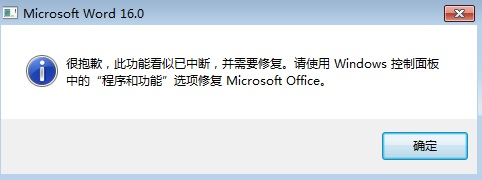
win+r打开运行窗口，输入regedit打开注册表
找到[HKEY_CURRENT_USER\Software\Microsoft\Office\16.0\Word\Options]
在右侧新建一个DWORD(32位)值，名称为NoReReg，值为1
关闭注册表，重新打开word即可
win+r打开运行窗口，输入regedit打开注册表
找到[HKEY_CURRENT_USER\Software\Microsoft\Office\16.0\Word\Options]
在右侧新建一个DWORD(32位)值，名称为NoReReg，值为1
关闭注册表，重新打开word即可
行号
在每页的左侧可以设置显示行号
例如5行一显示如下图:
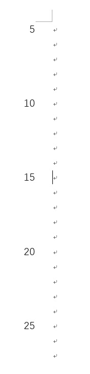
又例如1行一显示如下图:
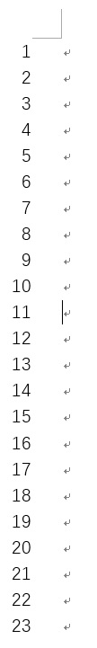
设置步骤如下:
点击上面的"布局"选项卡
再点击页面设置栏的右下角，如下图:
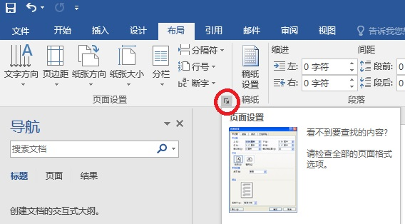
弹出页面设置框，点击"行号"按钮，如下图:
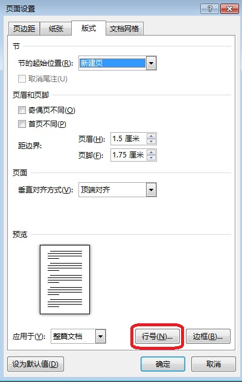
弹出行号框，如下图:
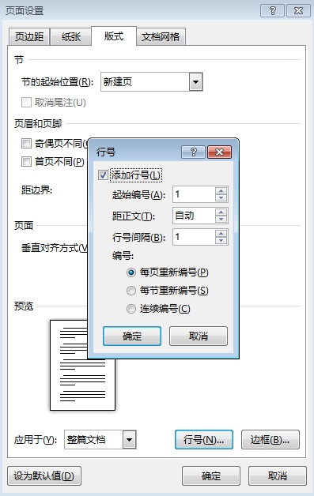
进行相应的设置即可，要想显示行号就勾选"添加行号"，不想显示就去掉勾选"添加行号"。
例如5行一显示如下图:
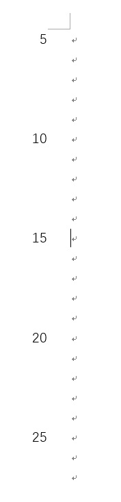
又例如1行一显示如下图:
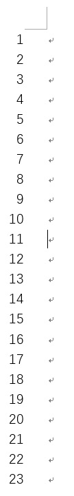
设置步骤如下:
点击上面的"布局"选项卡
再点击页面设置栏的右下角，如下图:
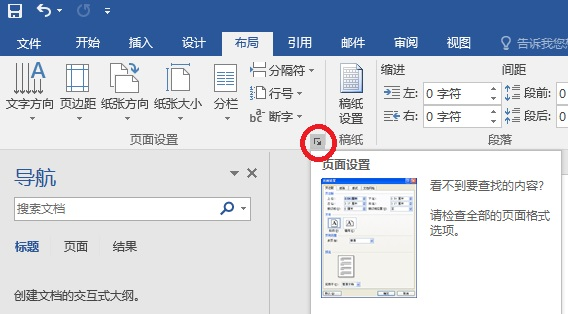
弹出页面设置框，点击"行号"按钮，如下图:
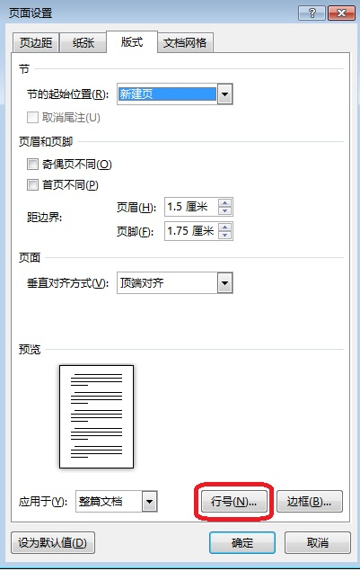
弹出行号框，如下图:
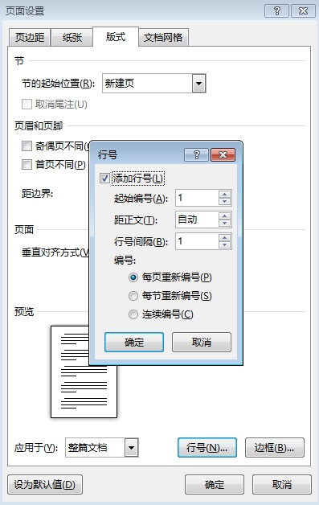
进行相应的设置即可，要想显示行号就勾选"添加行号"，不想显示就去掉勾选"添加行号"。